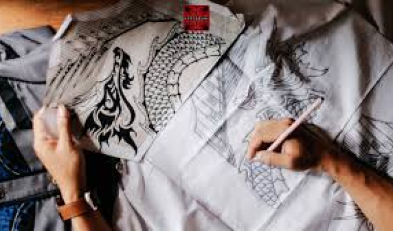

1. Siapkan Alat dan Bahan
Untuk membuat batik, Anda akan membutuhkan kain putih, malam (lilin khusus batik), canting (alat untuk menggambar dengan malam), pewarna batik, panci untuk memanaskan malam, dan alat pengering.

2. Gambar motif pada kain
Pertama, Anda perlu menggambar motif pada kain menggunakan pensil atau kapur. Motif batik dapat bervariasi, mulai dari motif tradisional hingga motif modern yang lebih abstrak.